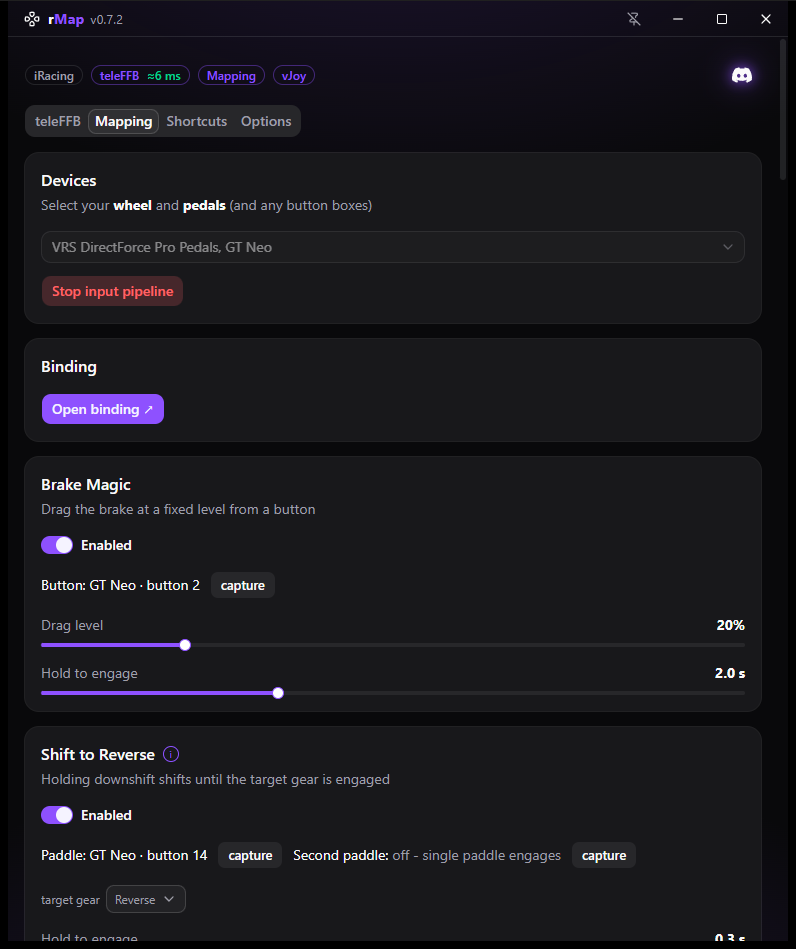
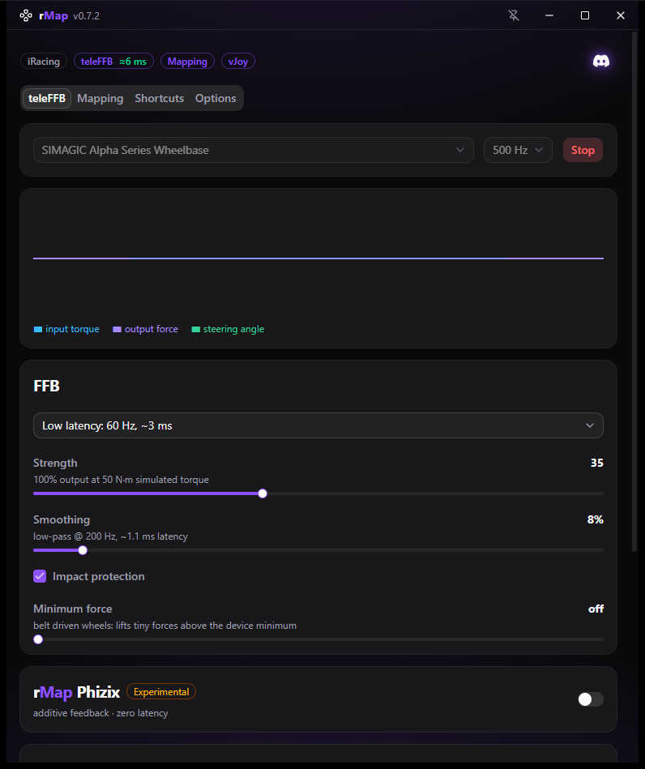
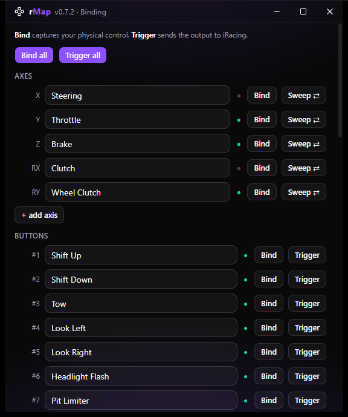
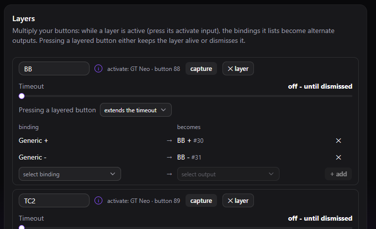
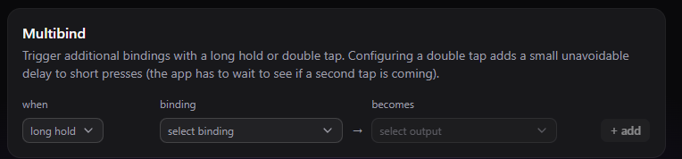
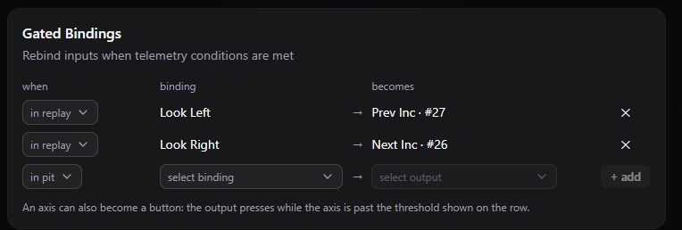
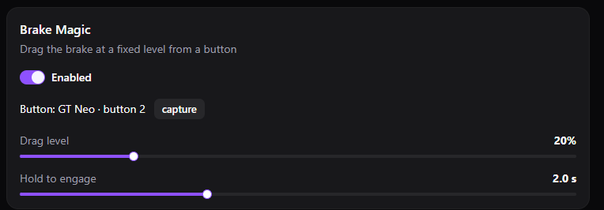
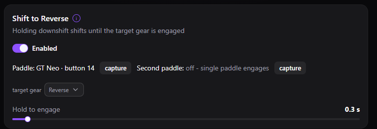
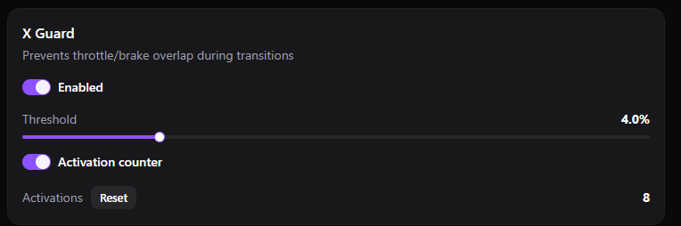
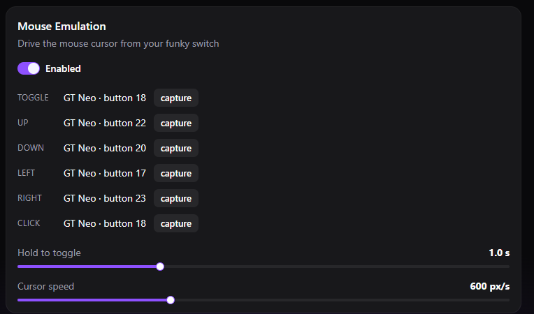

Advanced input tooling for iRacing. Map your wheel, pedals and button boxes onto one virtual device - with layers, multibinds and telemetry-aware bindings - plus teleFFB, a 360 Hz telemetry-driven force feedback engine.
Download for Windows Requires iRacing · all releases









The Binding window walks iRacing's Options screen with you: name each output, hit Bind to capture the physical control, then Trigger (or Sweep for axes) to press it into iRacing's binding prompt - no more guessing which button box row just flashed.
Multiply your buttons: pressing a layer's activate button overlays alternate bindings on the wheel - remap as many inputs as you like while it holds. A layer can dismiss itself after a timeout, after the next press (one-shot), or stay up until dismissed - ideal for giving one encoder several jobs.
One button, three functions: short press, long hold and double tap each fire their own output.
Rebind inputs while a telemetry condition holds - above or below a speed, in the pit lane, stopped, off throttle, watching a replay. The same button can scrub cameras in a replay and do its day job on track.
A bindable brake-drag button: hold it and rMap applies a fixed, configurable brake drag - consistent every time, released the moment you let go.
Hold the downshift paddle and rMap keeps pulsing downshifts until the target gear is actually engaged - it reads the real gear from telemetry, so one hold finds reverse (or neutral) every time.
Drops the throttle the instant brake input is detected, so overlapping pedal inputs never reach the sim - with a counter that shows how often it saved you.
Drive the Windows mouse cursor from your funky switch for iRacing's clickable black boxes - hold to toggle it on, steer with the switch, click from a wheel button.
Every change applies to the running pipeline immediately and saves itself - there is no Save button, and no restart between tweaks.
Replays iRacing's full 360 Hz steering-shaft torque signal to your wheelbase at up to 1000 Hz output - detail mode for texture, low-latency mode for response.
Strength, drive with soft-clip, smoothing, minimum force for belt-driven wheels, and impact protection - all adjustable live while you drive.
Additive effects layered on top of the torque signal: pit-limiter rumble, kerb strikes and fine road texture from suspension telemetry.
Re-center the wheel after damage or correct a calibration offset from a button, a Stream Deck key, or a SimHub binding - without leaving the car.
rMap Control on your Stream Deck: FFB strength up/down, FFB on/off, steering-center set and nudge (dials supported), and a live X Guard cut counter - with rMap's state shown right on the keys. Bundled with the app, one-click install.
Exposes rMap's live state as SimHub properties and its actions as bindable controls, and ships two transparent overlay dashes: feature pills that light up as Brake Magic, X Guard or a layer engages, the active layer's name with its countdown, and a toast for every change.
Updates are built in: rMap checks for new versions at launch and installs them with one click.